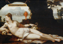

Pandora and the Creation of Woman
It should finally be noted that up until this point Hesiod’s discussion of mankind has confined itself to the existence of the male gender.It is only as a punishment for the transgressions of Prometheus that Zeus orders Pandora, the first woman to be created. (See image 1) Immediately he contrived an evil for human beings in exchange for fire. For the much renowned Lame One (Hephaestus) forged from earth the semblance of a reverend maiden by the plans of Cronus' son; and the goddess, bright-eyed Athena, girdled and adorned her with silvery clothing, and with her hands she hung a highly wrought veil from her head, a wonder to see; and around her head Pallas Athena placed freshly budding garlands that arouse desire, the flowers of the meadow; and around her head she placed a golden headband which the much-renowned Lame One made himself, working it with his skilled hands, to do a favour for Zeus the father.....from her comes the race of female women: for from her comes the race of female women: for of her is the deadly race and tribe of women, a great woe for mortals, dwelling with men, no companions of baneful poverty but only luxury...' (excerpt from Theogony lines 570-612). [translation Most 49-53).
{kind=link}
It is, of course, immediately obvious that this myth of the creation of woman is seeping in misogyny; Pandora is created secondary to humans, and will bring to them great evil; she is said in the Theogony (593-9, 605) to eat up the products of man’s labour and make him poorer. She is elsewhere said to bring evil to mankind by being responsible for opening a jar which contains evil of every type. Many people know of Pandora’s box from references in popular culture: 'But the woman removed the great lid from the storage jar with her hands and scattered all its contents abroad—she wrought baneful evils for human beings. Only Anticipation (or Hope) remained there in its unbreakable home under the mouth of the storage jar, by the plans of the aegis-holder, the cloud-gatherer, Zeus.' (Works and Days lines 94-9) [translation Most p. 95] There are parallels in the myths of many different cultures in which evils are released or men lose immortality because a closed container of some type is opened, often by a woman. Such myths as that of Pandora are not compatible with our own views of the equality of the sexes, but one must understand them within the context of the patriarchal societies in which they were conceived and developed. The myth of Pandora is perhaps not entirely negative, for one will note that in her jar remains Hope (or Anticipation). Could this be understood positively? What exactly is the function of Hope remaining in the jar? Here we have an example of the difficulties involved in interpreting myths. There is no one reading of a myth. Indeed, all the myths we will examine in this course can mean different things to different audiences, a fact which we must always keep in mind.